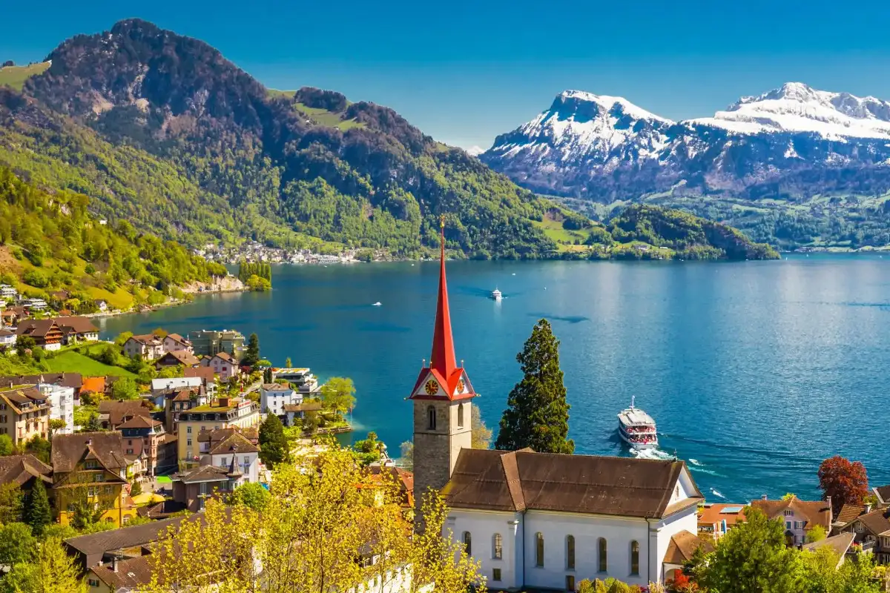
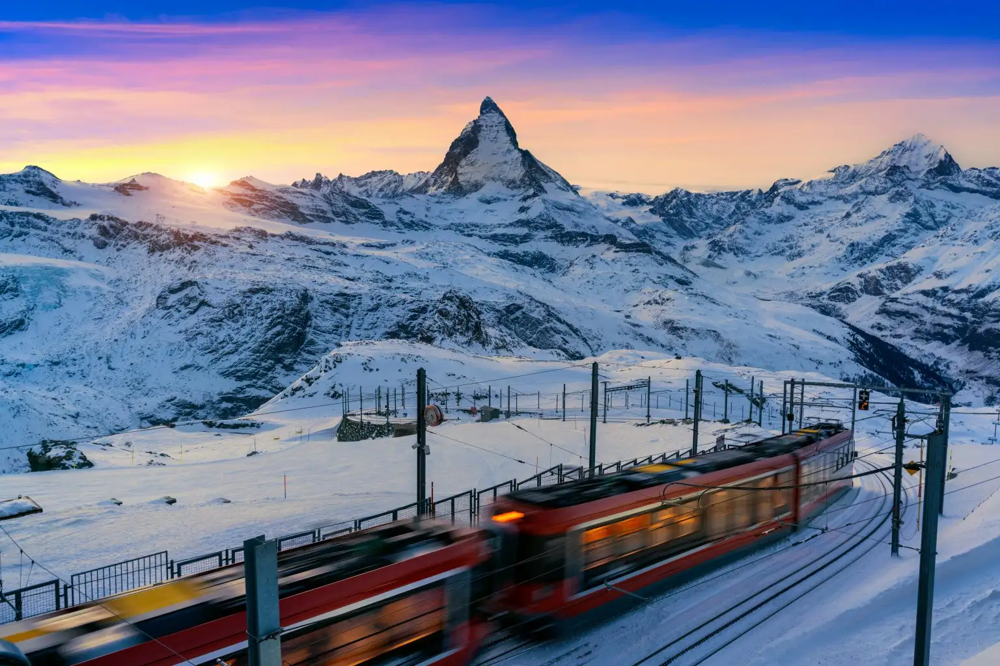

Lugares Turísticos
Os Alpes no Bernina Express

Este trem panorâmico permite você observar as paisagens suíças, incluídas as dos lagos Lej Pitschen, Lej Nair e Lago Branco.
A rota também passa por St.Moritz, conhecida como o Topo do Mundo.
O trajeto finaliza em Tirano, uma cidade italiana situada a cerca de 160 quilômetros de Milão.
Berna Helicóptero
Podemos reservar um passeio de helicóptero para desbravar Berna, cidade banhada pelo rio Aar,
e admirar do alto seus edifícios mais representativos, como a catedral gótica Berner Münster e o Bundeshaus,
o Parlamento Federal da Suíça.
Lago dos quatros cantões
Localizado entre os cantões de Lucerna, Uri, Schwyz e Unterwalden,
esse lago é cercado por montanhas majestosas e povoados repletos de história.
Zermatt e Cervin
Situada em Matterhorn, na fronteira entre a Itália e a Suíça.
você pode subir no trem cremalheira Gornergrat, que parte de Zermatt e sobe a 3.084 metros de altitude.
Desenhado pela primeira vez em 1865, seu perfil inspirou uma famosa marca de chocolate suíço, o Toblerone.